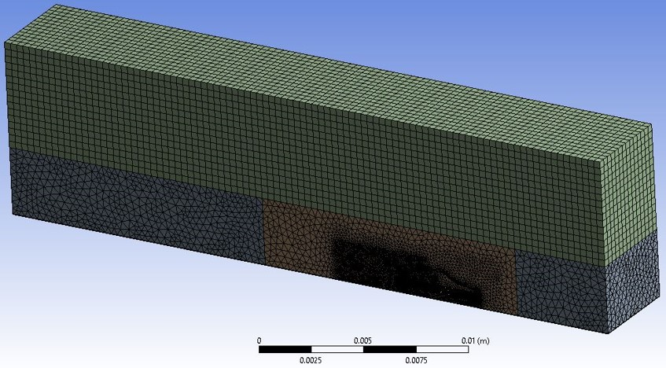

Aerodynamic of effects of a passenger car rear spoiler on axles

In a two-year project, the impact of a rear spoiler on the stability
and fuel consumption of a passenger car was studied. The hot-wire
anemometry method was employed to gather velocity information from
wind tunnel tests and develop the velocity pattern around the model.
The findings were then validated using computational fluid dynamics (CFD) simulations.
To perform the CFD simulations, Gambit, Ansys Design Modeler, and Ansys
Mesh were used to draw the model and generate the mesh. The FLUENT software
was then used to solve the turbulent flow around the vehicle with a rear
spoiler at different angles and speeds. A non-dimensional parameter was
defined to encompass both stability and fuel consumption, and the results
showed that a rear spoiler with an attack angle of 5° had the best overall
influence on both stability and fuel consumption.


Our findings indicate that calculating the lift coefficient alone is not
sufficient to determine stability, and that the loads on the axles should
also be considered. Our research demonstrates the importance of considering
both stability and fuel consumption when designing and optimizing a rear
spoiler for a passenger car.

Office:
Zuckerman Institute
3227 Broadway
Quad 6B
Contact:
ss6481@columbia.edu
sorooshsanatkhani@gmail.com
Advisors:
Dr. Vincent P. Ferrera
vpf3@columbia.edu
Dr. Sanjeev G. Shroff
sshroff@pitt.edu
Dr. Prahlad G. Menon
prm44@pitt.edu